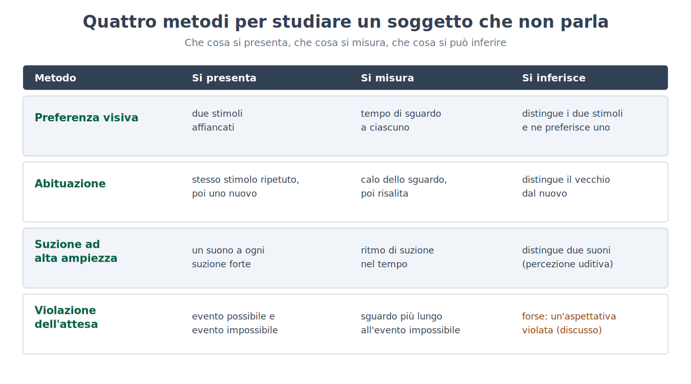
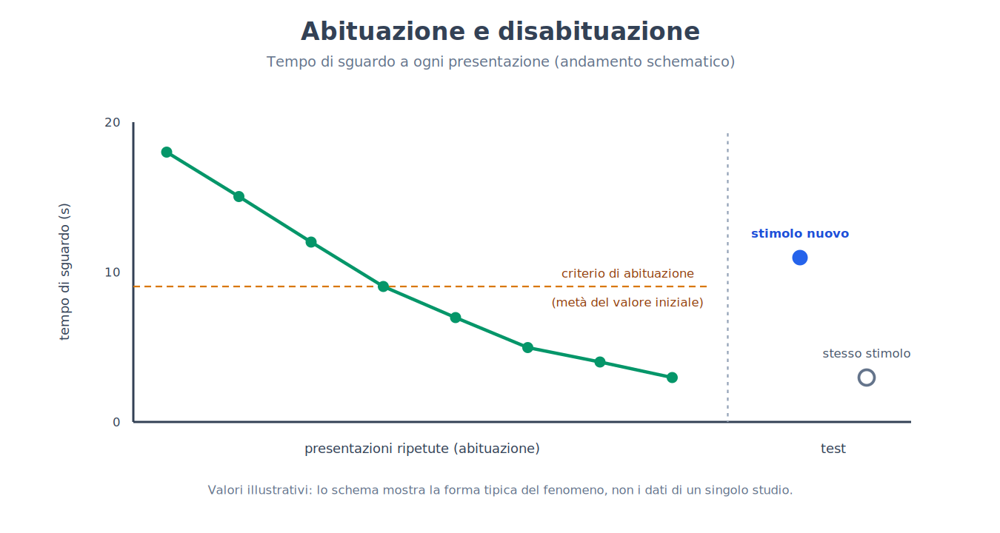
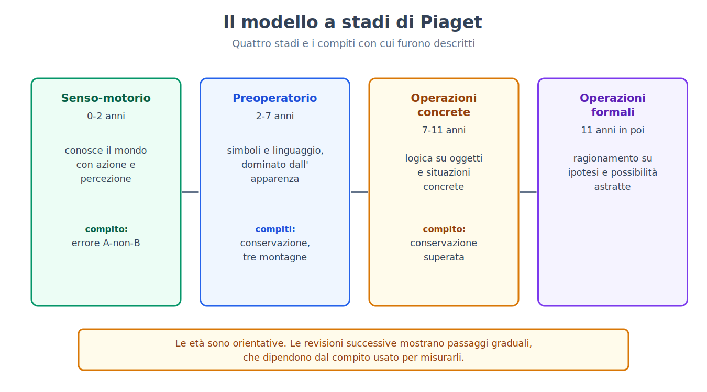
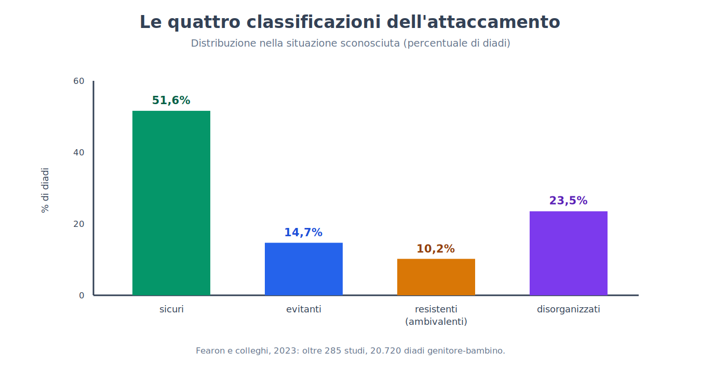
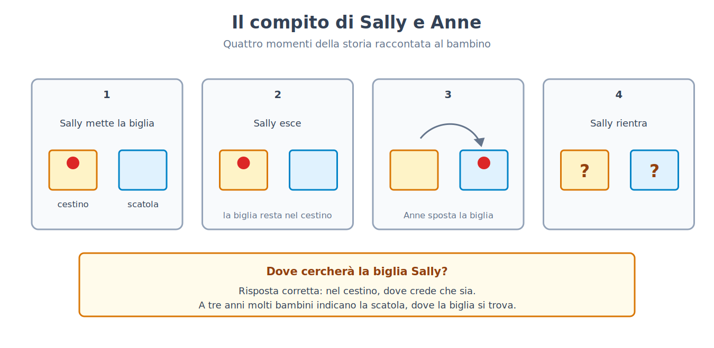
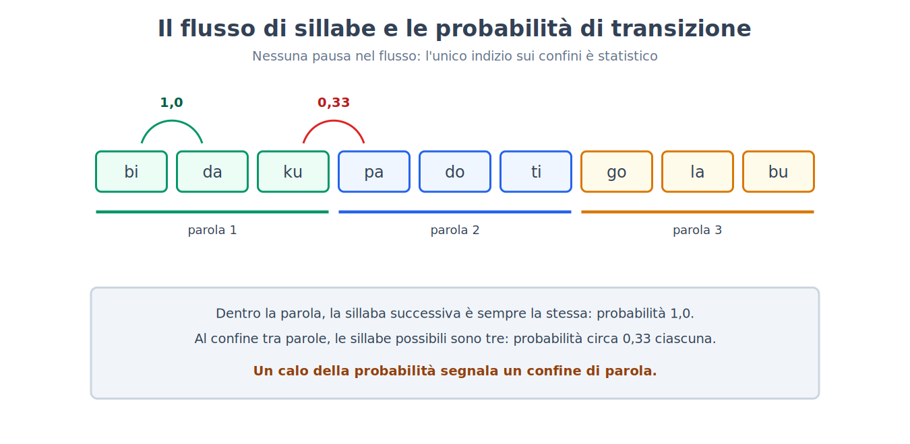
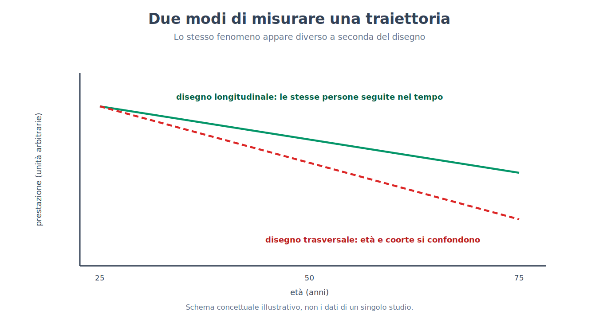

Parte IX. Sviluppo
Capitolo 54 — Studiare un soggetto che non parla
[IN DUE PAROLE]
Un neonato non risponde a un questionario, non esegue istruzioni e non spiega perché fa quello che fa. Per sapere che cosa percepisce, distingue e si aspetta, i ricercatori hanno dovuto inventare disegni sperimentali che si basano su ciò che il bambino fa da solo: guardare, succhiare, annoiarsi, sorprendersi. Questo capitolo espone quei metodi, la logica dell'inferenza che li regge e i suoi punti deboli, perché senza di essi i sei capitoli successivi sarebbero incomprensibili.
Il problema: come interrogare chi non può rispondere
Immagina di dover scoprire se un bambino di quattro mesi distingue due volti, due suoni o due quantità. Non puoi chiederglielo, e se potessi non otterresti una risposta affidabile: nemmeno un bambino di tre anni sa spiegare che cosa sa. Il problema è antico e ha una conseguenza pratica precisa. Per decenni le conclusioni sulla mente infantile sono state tratte da ciò che i bambini erano in grado di fare con le mani e con la voce, e un bambino che non sa ancora afferrare un oggetto o pronunciare una parola appariva, per costruzione, privo di capacità che forse possedeva già.
La soluzione è stata cambiare la domanda. Invece di chiedere al bambino di produrre una risposta che non sa dare, si cerca un comportamento che sa già produrre (guardare più a lungo, succhiare più in fretta) e si organizza l'esperimento in modo che quel comportamento diventi un segnale. Tutti i metodi di questo capitolo sono varianti di una stessa idea: il bambino risponde con ciò che ha, e lo sperimentatore costruisce la domanda attorno a quella risposta.
Quattro strumenti e che cosa misurano
La preferenza visiva (preferential looking) mette davanti al bambino due stimoli affiancati e registra per quanto tempo guarda ciascuno. Se il tempo medio dedicato a uno dei due supera sistematicamente quello dedicato all'altro, il bambino distingue i due stimoli, e in più mostra quale dei due preferisce. Il metodo non richiede alcun addestramento, e questo lo rende utilizzabile fin dai primi giorni di vita.
L'abituazione (habituation) sfrutta un fatto semplice: davanti a uno stimolo ripetuto l'attenzione cala. Si presenta più volte lo stesso stimolo finché il tempo di sguardo scende sotto un criterio stabilito in anticipo (per esempio, meno della metà del tempo iniziale per più prove consecutive), e poi si presenta uno stimolo nuovo. Se lo sguardo risale, il bambino ha colto la differenza, un fenomeno detto disabituazione (dishabituation). Il vantaggio rispetto alla preferenza visiva è che funziona anche quando il bambino non ha alcuna preferenza spontanea tra i due stimoli: basta che li distingua.
La suzione ad alta ampiezza (high-amplitude sucking) usa un comportamento che il neonato padroneggia dalla nascita. Il ciuccio è collegato a un trasduttore di pressione, e a ogni suzione abbastanza forte corrisponde la comparsa di uno stimolo, di solito un suono. Il bambino impara presto che succhiare produce il suono, e succhia di più; poi, quando il suono diventa familiare, il ritmo cala; se il suono cambia e il bambino se ne accorge, il ritmo risale. È lo stesso schema dell'abituazione, ma con una risposta motoria controllata dal bambino, ed è adatto soprattutto alla percezione uditiva.
La violazione dell'attesa (violation of expectation) è il metodo concettualmente più ambizioso. Al bambino si mostrano due eventi che differiscono per un solo aspetto fisico, ma di cui uno è possibile secondo una regola del mondo fisico o sociale (un oggetto solido non attraversa un altro oggetto solido) e l'altro è impossibile. Se il bambino guarda più a lungo l'evento impossibile, l'inferenza è che avesse un'aspettativa e che questa sia stata violata. È il metodo che ha dato origine alla maggior parte dei risultati sul «bambino che sa già molto» e anche, come vedremo, alla maggior parte delle controversie.

Un disegno per intero: la categoria che il neonato ascolta
[IL DISEGNO DELL'ESPERIMENTO]
Nello studio di Peter Eimas, Einar Siqueland, Peter Jusczyk e James Vigorito (1971), bambini di uno e di quattro mesi succhiavano un ciuccio collegato a un trasduttore, e ogni suzione abbastanza forte produceva una sillaba sintetica. I suoni usati erano costruiti variando in passi regolari di 20 millisecondi un solo parametro acustico, il tempo che intercorre tra il rilascio della consonante e l'inizio della vibrazione delle corde vocali. Gli adulti, ascoltando questa serie, sentono «ba» per i valori bassi e «pa» per quelli alti, con un confine netto in mezzo. Dopo la fase in cui il ritmo di suzione cresceva e poi calava (abituazione alla sillaba), a un gruppo di bambini veniva presentato un suono che differiva dal precedente di 20 millisecondi attraversando il confine adulto tra «ba» e «pa»; a un secondo gruppo veniva presentato un suono che differiva dal precedente della stessa quantità fisica di 20 millisecondi, ma rimanendo dentro la stessa categoria; un terzo gruppo di controllo non cambiava affatto. Solo i bambini del primo gruppo riprendevano a succhiare più in fretta in modo significativo. Il risultato indica che già a uno e quattro mesi la percezione dei suoni del linguaggio è organizzata in categorie, non in un continuo fisico: due suoni a parità di distanza acustica vengono trattati come diversi solo se appartengono a categorie diverse.
Il valore di questo disegno sta nel controllo: la differenza fisica è identica nelle due condizioni sperimentali, e solo la collocazione rispetto al confine di categoria cambia. Per questo il risultato non può essere attribuito a una semplice maggiore sensibilità acustica in una zona della scala. Quanto il fenomeno dipenda dall'esperienza e quanto da una predisposizione verrà discusso nel capitolo 59.
Dal tempo di sguardo a un numero
Il dato grezzo di molti di questi esperimenti è un tempo in secondi, e un tempo in secondi è un numero comodo da analizzare. L'indice più usato nella preferenza visiva è la quota del tempo totale dedicata a uno dei due stimoli.
[FORMULA]
Per ciascun bambino si calcola la proporzione di sguardo verso lo stimolo A:
P = T_A / (T_A + T_B)
Dove:
• P è la proporzione di sguardo verso lo stimolo A, un numero tra 0 e 1;
• T_A è il tempo totale (in secondi) in cui il bambino ha guardato lo stimolo A;
• T_B è il tempo totale (in secondi) in cui ha guardato lo stimolo B.
Se il bambino non distingue i due stimoli e non ha preferenze, ci si aspetta P = 0,5. Per sapere se il gruppo di bambini preferisce A, si confronta la media delle P individuali con 0,5 con un test t a un campione: t = (P̄ − 0,5) / (s / √n), dove P̄ è la media delle proporzioni, s la loro deviazione standard e n il numero di bambini.
Esempio di calcolo. Un bambino guarda A per 14 secondi e B per 6: P = 14/(14 + 6) = 0,70. Con n = 16 bambini, una media P̄ = 0,62 e una deviazione standard s = 0,15, l'errore standard è 0,15/√16 = 0,0375 e t = (0,62 − 0,5)/0,0375 = 3,2. Con 15 gradi di libertà questo valore corrisponde a una probabilità di circa 0,006 che una media così lontana da 0,5 emerga per caso se i bambini guardassero indifferentemente i due stimoli. Si ricordi, come visto nel capitolo 4, che il valore p dice quanto sarebbe sorprendente il dato se non esistesse alcuna preferenza, non quanto sia grande o importante la preferenza stessa.

I limiti di un metodo che parla attraverso gli occhi
[CONVINZIONE DIFFUSA]
Si legge spesso che, se un bambino guarda più a lungo un evento, significa che lo ha capito, oppure che si è stupito perché conosceva la regola violata. Il tempo di sguardo non è una misura diretta né dell'una né dell'altra cosa. Un bambino può guardare più a lungo perché lo stimolo è più nuovo, più complesso, più vistoso o semplicemente più vicino al centro del campo visivo; può guardare meno un evento nuovo perché lo ha già codificato in fretta; e in uno stesso esperimento la direzione della preferenza (novità o familiarità) dipende da quanto il bambino ha avuto tempo di codificare lo stimolo. Per questo i disegni ben costruiti prevedono sempre una condizione di controllo che pareggia la novità percettiva tra evento possibile e impossibile, e il risultato si legge come una differenza tra condizioni, mai come un valore assoluto.
A questo si aggiungono limiti pratici che hanno conseguenze sulla solidità dei risultati. I campioni di bambini piccoli sono spesso di poche decine di soggetti, perché reclutare e testare un lattante richiede tempo; una quota non trascurabile dei bambini testati deve essere esclusa dall'analisi perché piange, si addormenta o non guarda lo schermo; e il codice dello sguardo viene spesso assegnato da osservatori che, se conoscono la condizione, possono essere influenzati (per questo si usano codificatori ciechi, come ricordato nel capitolo 2).
Per misurare quanto questi limiti pesino, un consorzio internazionale ha messo in piedi un progetto di replicazione coordinato. Nel progetto ManyBabies 1 (ManyBabies Consortium, 2020) 67 laboratori di 16 paesi hanno testato 2.329 bambini, di età media intorno ai 9 mesi (tra 3 e 15 mesi), con lo stesso protocollo di preferenza per il parlare rivolto ai bambini rispetto al parlare tra adulti. L'effetto è emerso nell'insieme dei dati (d = 0,35, più piccolo delle stime della letteratura precedente), con grande variabilità tra laboratori: i bambini preferivano in media il parlare rivolto a loro, e la preferenza era più forte nei bambini più grandi e quando la lingua era quella parlata a casa. Il risultato è rassicurante sul metodo, che può funzionare in modo coerente in laboratori diversi, ma il progetto ha anche mostrato quanto la dimensione dell'effetto varii da laboratorio a laboratorio, una variabilità che i singoli studi con pochi bambini non possono rilevare.
[ATTENZIONE AL SALTO]
Tra il fatto che un bambino distingua due eventi e la conclusione che «possieda il concetto» che quegli eventi rappresentano ci sono almeno due passaggi che i dati non coprono da soli. Il primo è da discriminare a categorizzare (due stimoli sono trattati come diversi, ma lo sono per il bambino nel modo in cui lo sono per un adulto?). Il secondo è da categorizzare a rappresentare con un significato (il bambino sa che una cosa cade perché è senza sostegno, oppure ha solo registrato che certe immagini si succedono in un certo ordine?). Quando i capitoli seguenti parleranno di ciò che il bambino «sa», si intenderà sempre il livello più basso supportato dai dati, e dove la letteratura discute quale sia quel livello lo si dirà.
[MINI-CRONOLOGIA]
I principali strumenti sono relativamente recenti.
• Anni Sessanta — preferenza visiva sistematica nei lattanti, con la scoperta che già nei primi mesi lo sguardo non è distribuito a caso tra i pattern (Robert Fantz, 1961).
• 1971 — suzione ad alta ampiezza applicata alla percezione dei suoni del linguaggio (Eimas e colleghi).
• 1985 — violazione dell'attesa applicata al ragionamento fisico di bambini di cinque mesi (Baillargeon, Spelke e Wasserman, capitolo 56).
[IL PUNTO CHIAVE DEL CAPITOLO]
• Un soggetto che non parla si studia con ciò che sa già fare: guardare, succhiare, abituarsi, sorprendersi; i quattro metodi principali sono preferenza visiva, abituazione, suzione ad alta ampiezza e violazione dell'attesa.
• L'esperimento di Eimas e colleghi (1971) mostra come un disegno ben controllato permetta di concludere che a uno e quattro mesi i suoni del linguaggio sono già percepiti per categorie.
• Il tempo di sguardo si trasforma in un numero (la proporzione di sguardo) che si confronta con 0,5, ma non misura direttamente né comprensione né sorpresa: va letto come differenza tra condizioni controllate per la novità percettiva.
• La replicazione coordinata ManyBabies 1 (67 laboratori, 2.329 bambini) conferma che i metodi funzionano, e mostra anche quanta variabilità ci sia tra laboratori.
• Tra «distingue» e «possiede il concetto» ci sono passaggi che i dati non coprono da soli.
Capitolo 55 — Il neonato competente
[IN DUE PAROLE]
Per gran parte del Novecento il neonato è stato descritto come un essere passivo, per cui il mondo era una confusione di sensazioni. I metodi del capitolo 54 hanno cambiato il quadro: certe capacità sono presenti fin dai primi giorni, e alcune si sono formate persino prima della nascita. Ma «presente alla nascita» non significa «innato», e una delle scoperte più celebri di questo filone, l'imitazione neonatale, non ha retto a una verifica longitudinale su larga scala.
Che cosa vede e che cosa sente un neonato
La vista del neonato è limitata: l'acuità, cioè la capacità di distinguere dettagli fini, è molto inferiore a quella adulta, e la messa a fuoco è ottimale a una distanza di pochi decimetri, grosso modo quella tra il volto di chi lo tiene in braccio e il suo. Migliora rapidamente nei primi mesi, in parallelo alla maturazione della retina e della corteccia visiva (per la corteccia e i suoi periodi sensibili, capitolo 25). L'udito, al contrario, è già funzionante da prima della nascita, perché l'apparato uditivo è operativo nell'ultimo trimestre di gravidanza e i suoni del mondo esterno, attutiti, raggiungono il feto attraverso il liquido amniotico e i tessuti materni.
Un disegno per intero: imparare prima di nascere
[IL DISEGNO DELL'ESPERIMENTO]
Nello studio di Anthony DeCasper e Melanie Spence (1986), donne in gravidanza leggevano ad alta voce, per le ultime settimane prima del parto, una breve storia per bambini (un brano per bambini, scelto tra tre diversi — due in rima e uno in prosa — e assegnato a ciascuna donna). Dopo la nascita, ai neonati veniva offerto un ciuccio collegato a un registratore con la tecnica della suzione ad alta ampiezza (capitolo 54): in un certo schema di suzione (pause lunghe tra suzioni) partiva una registrazione, in un altro schema (pause brevi) ne partiva un'altra. Le due registrazioni erano la storia già letta in gravidanza e una storia nuova, letta dalla stessa voce, e l'assegnazione degli schemi alle due storie veniva invertita tra i bambini per controllare che non fosse lo schema di suzione, di per sé, a dirigere la scelta. I neonati modificavano il proprio ritmo di suzione in modo da ascoltare la storia familiare più spesso di quella nuova. L'interpretazione è che il feto avesse appreso qualcosa del ritmo e dell'intonazione di quel brano specifico, e che questo apprendimento prenatale fosse accessibile dopo la nascita.
Il risultato è coerente con altri esperimenti in cui neonati di pochi giorni mostrano di preferire la voce materna a quella di una donna sconosciuta, e vanno letti insieme: l'esperienza uditiva prenatale è sufficiente a lasciare tracce misurabili. Non dice, però, che il feto «capisce» il linguaggio: quello che si è appreso è soprattutto il profilo ritmico e melodico (la prosodia), non il significato.
I volti: una preferenza, e due spiegazioni
Da tempo è noto che i neonati guardano di preferenza i pattern simili a un volto. Una dimostrazione celebre è quella di Mark Johnson, Suzanne Dziurawiec, Hadyn Ellis e John Morton (1991), che mostrarono a neonati di pochi minuti di vita uno schema con tre macchie disposte come occhi e bocca e lo stesso schema con le macchie in disordine, e osservarono che i neonati seguivano con la testa e con gli occhi il primo più a lungo del secondo. Quel risultato è stato letto come prova di un meccanismo innato di riconoscimento dei volti, ma una spiegazione alternativa lo ridimensiona: i neonati preferirebbero in generale gli stimoli con più elementi nella parte alta (configurazioni «top-heavy»), e i volti ne sono un caso tipico senza che serva un meccanismo specifico per i volti. Entrambe le spiegazioni prevedono la stessa preferenza per i volti, e distinguerle richiede disegni che separino la configurazione da ciò che la rende un volto, cosa che gli esperimenti più recenti hanno cominciato a fare. Per questo, in breve, la preferenza è un dato solido e la sua spiegazione non lo è.
Un effetto celebre che non ha retto
[REGGE ANCORA?]
Per quasi quarant'anni si è sostenuto che i neonati imitino i gesti degli adulti: nello studio di Andrew Meltzoff e Keith Moore (1977), bambini di poche settimane di vita sembravano riprodurre il gesto di tirare fuori la lingua o aprire la bocca eseguito da un adulto che avevano appena visto. L'effetto è diventato uno dei fondamenti dell'idea che il neonato nasca con un meccanismo di corrispondenza tra ciò che vede fare e ciò che fa. Nel 2016 un gruppo guidato da Janine Oostenbroek ha seguito 106 bambini a quattro età (1, 3, 6 e 9 settimane), presentando loro nove gesti diversi e confrontando le risposte a ciascun gesto con quelle a tutti gli altri, invece che a un solo gesto di controllo; non ha trovato alcuna evidenza di imitazione, nemmeno per i due gesti più celebri. Gli autori dello studio originale hanno risposto contestando il protocollo e ribadendo i propri risultati precedenti. Lo stato attuale è questo: l'ampio e controllato studio longitudinale non ha riprodotto l'effetto, la discussione sulle differenze di metodo è aperta, e l'imitazione neonatale non può più essere presentata come un fatto stabilito.
L'esito è istruttivo per due motivi. Il primo è che l'effetto originale si basava su pochi gesti e su un controllo debole (confrontare un gesto con uno solo degli altri); il secondo è che un risultato citato per decenni in tutti i manuali non è per questo più solido di uno appena pubblicato, come ricordato nel capitolo 31 a proposito del priming comportamentale.
[ATTENZIONE AL SALTO]
Dire che una capacità è presente alla nascita non equivale a dire che è innata nel senso di «determinata geneticamente e indipendente dall'esperienza». Il feto ha avuto settimane di esperienza uditiva prima di nascere, come mostra il disegno di DeCasper e Spence; una preferenza per la voce materna presente a due giorni di vita non prova nulla sul suo grado di determinazione genetica. «Presente alla nascita» è una descrizione del quando; «innato» è un'affermazione sul come, e richiede esperimenti diversi (per esempio sul rapporto tra ereditabilità e ambiente, come discusso nel capitolo 27).
Che cosa resta del neonato competente
Il quadro che regge è questo: il neonato percepisce suoni, volti, odori e sapori, e sa già distinguere tra stimoli di modalità diverse; ha preferenze (la voce materna, il parlare rivolto ai bambini, i pattern simili a volti); impara anche prima della nascita. Quello che non regge, o non è ancora stabilito, è l'idea che alla nascita siano già presenti meccanismi specifici e completi per capacità sociali complesse come l'imitazione. «Competente» è un aggettivo appropriato se significa che il neonato è equipaggiato per imparare in fretta; è fuorviante se significa che arriva con la conoscenza già fatta.
[IL PUNTO CHIAVE DEL CAPITOLO]
• Il neonato vede poco ma sente bene, e l'apprendimento uditivo comincia prima della nascita: neonati che avevano ascoltato in gravidanza una storia specifica modificano la suzione per riascoltarla.
• La preferenza per i pattern simili a volti è un dato solido; la sua spiegazione (meccanismo innato per i volti oppure preferenza generale per le configurazioni con più elementi in alto) è discussa.
• L'imitazione neonatale, per decenni data per acquisita, non è stata riprodotta in uno studio longitudinale su 106 bambini e nove gesti: non può più essere presentata come un fatto stabilito.
• «Presente alla nascita» descrive il quando, non il come: non equivale a «innato».
Capitolo 56 — Stadi dello sviluppo cognitivo
[IN DUE PAROLE]
Il modello degli stadi di Jean Piaget è il quadro di riferimento più influente della psicologia dello sviluppo, e gran parte di ciò che si dice oggi sui bambini è, esplicitamente o no, una correzione di quel quadro. Questo capitolo espone il modello e i compiti originali con cui fu costruito, e poi i disegni sperimentali più sensibili che ne hanno ridimensionato le parti più rigide senza cancellarne il nucleo.
Il modello: quattro stadi, una stessa idea
Il modello di Piaget descrive lo sviluppo cognitivo come una successione di stadi qualitativamente diversi, ciascuno caratterizzato da un modo di organizzare la conoscenza. Nello stadio senso-motorio (dalla nascita a circa due anni) il bambino conosce il mondo attraverso azioni e percezioni. Nello stadio preoperatorio (da circa due a circa sette anni) compaiono il linguaggio e il gioco simbolico, ma il pensiero resta dominato dall'apparenza percettiva e dal punto di vista proprio. Nello stadio delle operazioni concrete (da circa sette a circa undici anni) il bambino ragiona in modo logico su oggetti e situazioni concreti. Nello stadio delle operazioni formali (da circa undici anni in poi) diventa possibile ragionare su ipotesi e possibilità astratte. L'idea di fondo è che il bambino non sia un adulto in miniatura con meno informazioni, ma costruisca attivamente strutture di pensiero che si riorganizzano in modo discontinuo. Le età indicate sono orientative, e Piaget stesso le trattava come tali.
Tre compiti originali e che cosa mostrano
Il primo è l'errore A-non-B (A-not-B error). Un giocattolo viene nascosto più volte sotto un panno A, e il bambino lo ritrova; poi lo si nasconde, sotto i suoi occhi, sotto un panno B. Un bambino di circa otto-dodici mesi cerca di nuovo sotto A. Per Piaget l'errore dimostrava che a questa età l'oggetto non ha ancora un'esistenza indipendente dall'azione che lo ha fatto trovare: la permanenza dell'oggetto (object permanence), cioè la comprensione che gli oggetti continuano a esistere quando non sono visibili, si costruisce gradualmente.
Il secondo è la conservazione. Il bambino vede due bicchieri identici con la stessa quantità di liquido e conferma che è uguale; poi, sotto i suoi occhi, il liquido di uno dei due viene versato in un bicchiere alto e stretto. Il bambino preoperatorio dice che nel bicchiere alto c'è «più» liquido, perché il livello è più alto. Per Piaget questo mostra che il bambino non coordina due dimensioni (altezza e larghezza) e si lascia guidare dall'aspetto.
Il terzo è il compito delle tre montagne (three mountains task), ideato con Bärbel Inhelder: al bambino si mostra un plastico con tre montagne diverse e gli si chiede come lo vedrebbe una bambola posta in un altro punto. Il bambino preoperatorio tende a descrivere la propria visione. Piaget lo interpretò come egocentrismo, l'incapacità di assumere un punto di vista diverso dal proprio.

Che cosa regge e che cosa è stato corretto
L'osservazione di base, che i bambini sbagliano in modo sistematico e caratteristico a certe età, è solida: gli errori di Piaget si riproducono. Ciò che è stato messo in discussione è l'interpretazione, cioè l'idea che l'errore riveli l'assenza della capacità, e la rigidità degli stadi. Due linee di lavoro hanno prodotto le correzioni più importanti.
Compiti rimodellati. Margaret Donaldson e i suoi collaboratori hanno mostrato che parte degli errori dipende da come il compito è formulato. Nello studio di Martin Hughes (1975), un bambino piccolo doveva nascondere una bambola a un poliziotto di plastica posto in punti diversi di un plastico con muri: in questa versione, nella quale la situazione ha senso e il compito è comprensibile, la grande maggioranza dei bambini di tre anni e mezzo e quattro anni riusciva a trovare un nascondiglio che il poliziotto non poteva vedere, cioè a considerare un punto di vista diverso dal proprio, mentre nelle tre montagne gli stessi bambini fallivano. Nello studio di James McGarrigle e Margaret Donaldson (1974), un orsacchiotto «cattivo» rimescolava una fila di oggetti in modo accidentale: i bambini davano più risposte corrette sulla conservazione del numero di quando era lo sperimentatore a spostare gli oggetti con l'aria di averlo fatto apposta. In entrambi i casi la capacità sembra esserci già, ma il compito originale nascondeva le condizioni in cui essa si manifesta.
[IL DISEGNO DELL'ESPERIMENTO]
Nell'esperimento di Renée Baillargeon, Elizabeth Spelke e Stanley Wasserman (1985), bambini di cinque mesi vedevano uno schermo ruotare avanti e indietro di 180 gradi attorno a un asse, come un ponte levatoio che si abbassa e si rialza. In una fase di abituazione, lo schermo ruotava liberamente e il bambino finiva per perdere interesse. Poi, nella fase di test, una scatola veniva collocata dietro lo schermo, nella traiettoria della rotazione. Nell'«evento possibile» lo schermo si fermava quando raggiungeva la scatola; nell'«evento impossibile» lo schermo continuava la rotazione per tutti i 180 gradi, come se la scatola non ci fosse (un trucco ottenuto con un meccanismo nascosto, che faceva sparire la scatola dalla traiettoria). L'evento impossibile era percettivamente più familiare della versione possibile, perché ripeteva l'identica rotazione di 180 gradi vista in abituazione, mentre quello possibile mostrava una rotazione nuova e più breve. Nonostante questo, i bambini guardavano l'evento impossibile significativamente più a lungo. L'interpretazione è che i bambini di cinque mesi si aspettino che la scatola, nascosta dallo schermo, continui a esistere e a occupare il suo spazio, cioè che abbiano già una forma di permanenza dell'oggetto, molti mesi prima dell'età in cui il compito di Piaget la mostrerebbe con le mani.
Il risultato ha avuto un'enorme influenza, e per questo conviene dire con chiarezza dove sta il punto controverso. Il dato (i bambini guardano di più l'evento impossibile, anche a parità di familiarità) è riprodotto in molti laboratori. L'interpretazione è invece discussa.
[QUESTIONE CONTROVERSA]
La spiegazione «ricca» sostiene che i risultati di violazione dell'attesa mostrano l'esistenza fin dai primi mesi di conoscenze di base sul mondo fisico (che gli oggetti sono solidi, continui, che non si muovono da soli), le cosiddette conoscenze nucleari, e che l'errore A-non-B a otto mesi sia dovuto a limiti di pianificazione e di controllo dell'azione, non di concetto. La spiegazione «parsimoniosa», sviluppata tra gli altri da Robert Bogartz, Cara Cashon e Leslie Cohen, sostiene che si possano spiegare molti di questi risultati senza attribuire al bambino alcuna conoscenza sugli oggetti: basterebbe che i bambini siano sensibili a certe caratteristiche percettive degli eventi (per esempio la quantità e la durata del movimento) e che queste siano correlate, nei disegni sperimentali, con la possibilità fisica dell'evento. Un'altra posizione vede nei dati una forma di sapere implicito che esiste ma non è accessibile all'azione, e quindi spiega la dissociazione tra occhi e mani invece di negarla. La difficoltà del dibattito è che i dati di sguardo sono compatibili con tutte e tre le letture, e gli esperimenti decisivi dovrebbero fornire previsioni diverse; alcuni lo fanno, ma nessuno ha ancora chiuso la questione.
L'apprendimento per osservazione, a metà strada tra Bandura e Piaget
Il capitolo 19 aveva mostrato, con il bambino che imita il modello aggressivo di Albert Bandura, che l'apprendimento non richiede rinforzo diretto e che un ruolo importante spetta all'osservazione (19 → 56). Gli esperimenti sullo sviluppo permettono di precisare che cosa si impara osservando. Nello studio di György Gergely, Harold Bekkering e Ildikó Király (2002), bambini di quattordici mesi vedevano un adulto accendere una luce toccandola con la fronte. In una condizione l'adulto aveva le mani libere e scelse comunque di usare la testa; in un'altra condizione aveva le mani impegnate (teneva una coperta attorno alle spalle) e usava la testa per necessità. I bambini del primo gruppo tendevano a imitare il gesto della testa molto più spesso di quelli del secondo, che usavano per lo più le mani. Questo indica che l'imitazione dei bambini piccoli è selettiva: non copiano il gesto per se stesso, ma tengono conto del perché l'adulto ha scelto quel gesto. È un risultato che si colloca tra Bandura (che spiega come l'osservazione possa trasmettere un comportamento) e Piaget (che sostiene che il bambino costruisce attivamente il proprio pensiero), e mostra che l'osservazione è già interpretazione.
Gli stadi oggi
Il quadro che regge è questo: lo sviluppo cognitivo procede per riorganizzazioni qualitative, ma gli stadi non sono blocchi netti, la stessa capacità compare in momenti diversi a seconda del compito, e lo sviluppo è in larga misura specifico del dominio, cioè lo stesso bambino può essere avanzato in un ambito e indietro in un altro. L'errore di Piaget, se così si può dire, non è stato di descrizione ma di inferenza: trarre dal fallimento in un compito complesso la conclusione che la capacità fosse assente.
[IL PUNTO CHIAVE DEL CAPITOLO]
• Il modello di Piaget descrive quattro stadi (senso-motorio, preoperatorio, operazioni concrete, operazioni formali) e le sue età sono orientative.
• Gli errori descritti da Piaget (A-non-B, conservazione, tre montagne) sono robusti; è stata corretta l'interpretazione dell'errore come assenza della capacità.
• Compiti riformulati in modo più sensato (poliziotto di Hughes, orsacchiotto cattivo di McGarrigle e Donaldson) fanno emergere capacità prima giudicate assenti.
• L'esperimento di Baillargeon, Spelke e Wasserman (1985) mostra che a cinque mesi lo sguardo reagisce a eventi fisicamente impossibili, ma tre letture (conoscenze nucleari, spiegazione percettiva, sapere implicito) sono ancora in competizione.
• L'imitazione dei bambini di un anno è selettiva (Gergely e colleghi, 2002): l'osservazione trasmette interpretazioni, non solo gesti, e chiude il rimando dal capitolo 19.
Capitolo 57 — Attaccamento
[IN DUE PAROLE]
Il legame tra un bambino e chi si prende cura di lui è stato uno dei primi temi su cui la psicologia dello sviluppo ha tentato di passare dall'intuizione clinica alla misura. Questo capitolo espone l'esperimento sulle scimmie che ha rovesciato l'idea che il legame nasca dal cibo, il disegno con cui l'attaccamento viene classificato, le distribuzioni osservate nei campioni più ampi, e le sovrainterpretazioni che si sono accumulate attorno a quelle classificazioni.
Il legame non nasce dal cibo
Per una parte consistente della psicologia della prima metà del Novecento, compresa quella di impostazione comportamentista descritta nella Parte III, il legame del neonato con la madre era una conseguenza di un fatto semplice: la madre porta il cibo, il cibo riduce un bisogno, e chi riduce il bisogno diventa oggetto di attaccamento. Era una spiegazione economica e, soprattutto, sembrava mettere la questione al riparo dalle ipotesi più vaghe.
[IL DISEGNO DELL'ESPERIMENTO]
Nell'esperimento di Harry Harlow (1958), cuccioli di macaco rhesus venivano separati dalla madre poco dopo la nascita e allevati con due «madri» artificiali. Una era un cilindro di rete metallica, l'altra un cilindro rivestito di tessuto morbido. Nella condizione principale il cibo era fornito dalla madre di rete, mentre la madre di stoffa non dava latte. Se il legame nascesse dalla fonte del cibo, i cuccioli avrebbero dovuto trascorrere più tempo con la madre di rete. Trascorrevano invece la maggior parte della giornata aggrappati alla madre di stoffa, e andavano dalla madre di rete solo per nutrirsi. Quando nella gabbia veniva introdotto uno stimolo spaventoso, per esempio un giocattolo meccanico rumoroso, i cuccioli correvano dalla madre di stoffa e si aggrappavano a lei, e dopo un po' cominciavano a esplorare l'oggetto da quella base. Il risultato indica che il contatto fisico rassicurante è un fattore di legame indipendente dal nutrimento, e che la figura di attaccamento funziona come una base da cui esplorare.
L'esperimento va letto con le sue cautele: riguarda scimmie, non bambini; la deprivazione sociale in cui i cuccioli erano allevati produsse in seguito gravi difficoltà di comportamento, un dato importante per la storia della protezione dei soggetti sperimentali e per ciò che dice sulla sensibilità dello sviluppo alle condizioni di allevamento. Ma sul punto specifico che interessava (il legame non è un derivato del cibo) il risultato è stato confermato da molte osservazioni sull'uomo e ha cambiato la teoria.
Dalla clinica alla misura: Bowlby e Ainsworth
John Bowlby, formatosi nella tradizione psicoanalitica, propose una teoria dell'attaccamento che ne conserva un'intuizione e ne cambia il fondamento. L'intuizione, già presente nella psicoanalisi come mostrato nel capitolo 13 (13 → 57), è che le prime relazioni lasciano tracce nello sviluppo successivo. Il cambiamento è che il legame non deriva da pulsioni libidiche ma da un sistema comportamentale evolutosi per mantenere la vicinanza al caregiver in condizioni di pericolo: il piccolo piange, cerca, si aggrappa, e il caregiver risponde. Questa riformulazione ha una conseguenza decisiva per un libro che da una parte all'altra insiste sulla verificabilità: un sistema di comportamenti che si osservano si può studiare.
Mary Ainsworth costruì lo strumento per studiarlo.
[IL DISEGNO DELL'ESPERIMENTO]
Nella procedura della situazione sconosciuta (Strange Situation Procedure), sviluppata da Mary Ainsworth e colleghi negli anni Sessanta e Settanta, un bambino di circa dodici-diciotto mesi viene portato in una stanza di laboratorio con il genitore, e attraversa una sequenza di brevi episodi di pochi minuti ciascuno: il bambino esplora la stanza con il genitore; entra una persona sconosciuta; il genitore esce lasciando il bambino con la sconosciuta; il genitore rientra (prima riunione); poi il bambino resta da solo per un breve intervallo; la sconosciuta rientra; infine rientra il genitore (seconda riunione). Il comportamento che viene classificato non è tanto il pianto alla separazione, che varia molto per temperamento, quanto ciò che il bambino fa alla riunione. I bambini sicuri (secure) cercano il genitore, si lasciano consolare e tornano a esplorare. I bambini evitanti (avoidant) ignorano o evitano il genitore al rientro e mostrano poca angoscia visibile. I bambini resistenti o ambivalenti (resistant, ambivalent) cercano il contatto ma non si lasciano consolare e alternano richiesta e rifiuto. Una quarta categoria, introdotta in seguito da Mary Main e Judith Solomon, comprende i bambini disorganizzati (disorganized), il cui comportamento alla riunione è contraddittorio o privo di strategia coerente (per esempio avvicinarsi al genitore con lo sguardo rivolto altrove, o rimanere immobili).
La situazione sconosciuta è stata applicata in centinaia di studi, il che permette oggi un raffronto con un campione molto ampio.
[NUMERI]
Una meta-analisi pubblicata nel 2023 da Sheri Madigan, Pasco Fearon e colleghi, che ha riunito la letteratura sulla situazione sconosciuta (oltre 285 studi e 20.720 diadi genitore-bambino), stima la distribuzione globale delle quattro classificazioni così:
• sicuri: 51,6%
• evitanti: 14,7%
• resistenti o ambivalenti: 10,2%
• disorganizzati: 23,5%
La stessa analisi riporta meno attaccamento evitante nel tempo, differenze tra i campioni nordamericani e quelli di altre regioni, e quote più alte di evitanti e disorganizzati in campioni socialmente svantaggiati; l'attaccamento disorganizzato è più frequente anche quando il genitore ha una psicopatologia, il bambino ha subito maltrattamenti o è stato allevato in istituto o in affido. Le cifre molto citate nella letteratura divulgativa, che indicano una nettissima maggioranza di sicuri nelle famiglie «normali», risalgono a campioni più piccoli e di un solo tipo di popolazione, e non coincidono con questa stima complessiva.

Crescere in istituto: lo studio con assegnazione casuale
La separazione dei bambini dai genitori per un tempo lungo e in condizioni di cura impersonale è la forma più estrema di deprivazione di cui si dispone di dati controllati. Lo studio più importante è il Bucharest Early Intervention Project, che a Bucarest ha seguito bambini cresciuti in istituto e li ha confrontati con bambini cresciuti in famiglia.
[IL DISEGNO DELL'ESPERIMENTO]
Nel Bucharest Early Intervention Project (Charles Nelson, Charles Zeanah, Nathan Fox e colleghi), 136 bambini che vivevano in istituto dopo essere stati abbandonati furono assegnati per sorteggio (68 e 68) a un programma di affido familiare, creato per il progetto, oppure alla cura abituale, cioè a continuare a vivere in istituto; un gruppo di bambini di Bucarest cresciuti nelle loro famiglie (72 nel disegno complessivo) costituiva il confronto. I valori riportati qui sotto vengono da un sottocampione di 174 bambini con dati disponibili (60 in istituto, 57 in affido, 57 in famiglia). L'assegnazione casuale è ciò che distingue questo studio dalla maggior parte della letteratura sulla deprivazione, nella quale i bambini che escono dall'istituto sono diversi, per molti aspetti, da quelli che restano. I bambini furono valutati ripetutamente, a 30 mesi, a 42 mesi e poi in età successive. Nel quoziente di sviluppo cognitivo (scala Bayley) il gruppo allevato in famiglia mostrava a 30 mesi un valore medio di 102,2 e a 42 mesi di 103,3, mentre il gruppo in istituto mostrava 77,2 e 78,9, e il gruppo in affido 81,9 e 85,7: il gruppo in affido aveva valori medi più alti di quello rimasto in istituto, ma nel sottocampione la differenza non risultava significativa in questi due momenti (nelle analisi sull'intero campione randomizzato il vantaggio dell'affido risulta invece significativo sia a 42 sia a 54 mesi; a 54 mesi il quoziente intellettivo medio era di circa 81 nel gruppo in affido, 73 in quello rimasto in istituto e 109 in quello cresciuto in famiglia), ed entrambi i gruppi restavano ben sotto quello allevato in famiglia. Per i bambini che erano stati collocati in affido prima dei 24 mesi di età, tuttavia, i risultati cognitivi a 42 mesi erano significativamente migliori di quelli dei bambini collocati più tardi, con un andamento graduale in funzione dell'età di collocamento.
Il dato va letto con la prudenza che merita. L'assegnazione casuale rende interpretabile come causale la differenza tra i gruppi di partenza; il confronto per età di collocamento, invece, riguarda bambini che sono stati collocati prima o dopo per ragioni non controllate dai ricercatori, e va letto con più cautela. Inoltre i dati descrivono un andamento graduale in funzione dell'età di collocamento, e parlare di «periodo critico» in senso stretto richiederebbe una discontinuità che qui non si osserva. La formulazione più prudente è che prima è meglio, che la plasticità non si chiude di colpo, e che a 42 mesi anche i bambini in affido restavano sotto i coetanei cresciuti in famiglia.
Stabilità e sovrainterpretazioni
[CONVINZIONE DIFFUSA]
Nella divulgazione l'attaccamento del primo anno viene spesso presentato come un destino: i bambini sicuri diventano adulti sicuri nelle relazioni amorose, quelli evitanti diventano adulti distanti, quelli ansiosi diventano adulti appiccicosi. La ricerca longitudinale mostra una continuità reale ma moderata, non un determinismo. Tra la classificazione a dodici-diciotto mesi e le caratteristiche delle relazioni adulte ci sono vent'anni di esperienze che modificano il quadro, e gli studi che confrontano la classificazione infantile con quella adulta trovano associazioni moderate, che si indeboliscono quando intervengono eventi di vita importanti (lutti, divorzi, malattie, nuove relazioni). In più, i «test dello stile di attaccamento» che circolano online non misurano la stessa cosa della situazione sconosciuta: sono questionari di autovalutazione sulle relazioni di coppia adulte, costruiti su teorie diverse e con proprietà diverse, e le loro categorie non coincidono con le quattro dei bambini.
Una seconda sovrainterpretazione riguarda la causa. La teoria dell'attaccamento attribuisce un ruolo centrale alla sensibilità del genitore, cioè alla capacità di cogliere i segnali del bambino e di rispondervi in modo adeguato e tempestivo. La relazione tra sensibilità e sicurezza è documentata, ma è di dimensione moderata, e per questo la ricerca discute da tempo quanto di ciò che si osserva dipenda da altri fattori.
[QUESTIONE CONTROVERSA]
Una prima posizione sostiene che la sensibilità genitoriale sia il meccanismo principale della sicurezza, con la conseguenza che gli interventi che migliorano la sensibilità migliorano anche la sicurezza del bambino. Una seconda sottolinea che il temperamento del bambino, e quindi in parte i fattori genetici (capitolo 27), contribuiscono sia al modo in cui il bambino si comporta alla riunione sia al modo in cui il genitore reagisce a lui, e che una parte dell'associazione osservata tra sensibilità e sicurezza può riflettere questa influenza reciproca. Una terza sottolinea che la situazione sconosciuta è stata costruita e validata soprattutto in contesti nordamericani, che il significato di un comportamento (evitare il genitore alla riunione, non protestare alla separazione) può cambiare tra culture, e che le differenze regionali nelle distribuzioni, che la stessa meta-analisi del 2023 riporta, impongono cautela nel considerare universali sia le categorie sia la loro interpretazione. Le tre posizioni non si escludono, e i dati disponibili non permettono di assegnare a ciascuna un peso quantitativo definitivo.
Il bilancio con la psicoanalisi
Il capitolo 13 aveva indicato l'attaccamento come una delle linee di continuità più solide tra la tradizione psicoanalitica e la ricerca verificabile. Dopo questo capitolo si può precisare in che senso (57 → 13). Ciò che la psicoanalisi aveva intuito e che l'attaccamento ha reso misurabile è che le prime relazioni contano per lo sviluppo; ciò che è rimasto fuori dalla verifica è il contenuto specifico delle fantasie inconsce, la teoria delle fasi psicosessuali, e l'idea che i sintomi adulti si possano ricondurre a un trauma preciso del primo anno. L'attaccamento è un buon esempio del criterio che questo libro si è dato: separare, componente per componente, ciò che è stato messo alla prova da ciò che resta ipotesi.
[IL PUNTO CHIAVE DEL CAPITOLO]
• L'esperimento di Harlow sui macachi mostra che il legame non deriva dal cibo: il contatto rassicurante è un fattore indipendente e la figura di attaccamento funziona da base per esplorare.
• La situazione sconosciuta classifica il comportamento del bambino alla riunione con il genitore in quattro categorie: sicuro, evitante, resistente, disorganizzato.
• Nella meta-analisi del 2023 (oltre 285 studi, 20.720 diadi) la distribuzione è 51,6% sicuri, 14,7% evitanti, 10,2% resistenti, 23,5% disorganizzati, con differenze tra regioni e popolazioni.
• Il Bucharest Early Intervention Project, con assegnazione casuale all'affido, mostra effetti cognitivi marcati della deprivazione istituzionale; il collocamento in affido prima dei 24 mesi dà risultati migliori, in un andamento graduale e non a soglia, e a 42 mesi i bambini in affido restavano sotto i coetanei cresciuti in famiglia.
• La continuità dell'attaccamento nel tempo è moderata, e i test di «stile di attaccamento» adulto non misurano ciò che la situazione sconosciuta misura nell'infanzia.
• Rispetto alla psicoanalisi, l'attaccamento conserva l'intuizione sulle prime relazioni e la rende verificabile, lasciando da parte i contenuti inverificabili.
Capitolo 58 — Teoria della mente e cognizione sociale in sviluppo
[IN DUE PAROLE]
A un certo punto dello sviluppo il bambino capisce che le altre persone hanno pensieri propri, che possono essere diversi dai suoi e persino sbagliati. Questo capitolo espone il compito classico che ha reso misurabile questa comprensione, la meta-analisi che ne fissa l'età, la serie di studi che pretendevano di mostrarla già nei lattanti, e lo stato attuale del dibattito, che è aperto.
Che cosa significa capire che qualcuno ha una credenza sbagliata
La teoria della mente (theory of mind) è la capacità di attribuire stati mentali (credenze, desideri, intenzioni) a sé e agli altri e di usarli per spiegare e prevedere il comportamento. Il caso che la mette alla prova nel modo più netto è la falsa credenza (false belief): comprendere che una persona può credere una cosa che non corrisponde alla realtà, e che si comporterà in base alla credenza e non alla realtà.
[IL DISEGNO DELL'ESPERIMENTO]
Nel compito sviluppato da Heinz Wimmer e Josef Perner (1983) e adattato da Simon Baron-Cohen, Alan Leslie e Uta Frith (1985) nella versione Sally e Anne, al bambino viene raccontata (con due bambole) una storia: Sally mette una biglia nel proprio cestino e esce dalla stanza; mentre è fuori, Anne sposta la biglia nel proprio cesto; Sally rientra. Si chiede al bambino: «Dove cercherà la biglia Sally?». La risposta corretta (nel cestino, dove Sally crede che sia) richiede di tenere separata la propria conoscenza della realtà dalla credenza di Sally. Per controllare che il bambino abbia seguito la storia, gli si fanno anche domande di memoria («Dov'è in realtà la biglia?», «Dov'era all'inizio?») e solo chi risponde correttamente a queste viene incluso nell'analisi. I bambini di tre anni rispondono in genere indicando il nuovo nascondiglio, cioè il luogo in cui la biglia si trova effettivamente, mentre la maggior parte dei bambini di quattro-cinque anni indica il cestino. Nello studio di Baron-Cohen e colleghi circa l'85% dei bambini a sviluppo tipico (23 su 27) e una percentuale simile di bambini con sindrome di Down (12 su 14) superava il compito, mentre lo superava circa il 20% dei bambini autistici (4 su 20), pur avendo questi ultimi un'età mentale in media più alta di quella dei bambini con sindrome di Down.

Il compito è stato ripetuto in centinaia di studi, con materiali, lingue e culture diverse. Una meta-analisi di Henry Wellman, David Cross e Julanne Watson (2001) ne ha riunito 178 e ha mostrato un andamento regolare: fino a circa tre anni e mezzo la prestazione è sotto il livello del caso, tra i tre anni e mezzo e i quattro cambia rapidamente, e dopo i quattro-cinque è sopra il caso. Il cambiamento si osserva con variazioni di formulazione, di tipo di domanda e di cultura, il che rafforza l'idea che si tratti di un fenomeno reale e non di un artefatto di un compito.
[ATTENZIONE AL SALTO]
Dal risultato sui bambini autistici (una quota più bassa supera il compito) non segue che la difficoltà con la falsa credenza spieghi l'autismo, né che tutte le persone autistiche falliscano compiti di teoria della mente. Il compito misura una competenza specifica in un formato specifico, molti bambini autistici lo superano, e le competenze sociali quotidiane dipendono da molto altro. Una parte della ricerca più recente ha inoltre messo in discussione l'idea che la difficoltà sia un deficit unilaterale: la proposta del «problema della doppia empatia» sostiene che l'incomprensione reciproca tra persone autistiche e non autistiche è bidirezionale, e che non può essere descritta come una mancanza della sola parte autistica.
Il bambino piccolo ha già una teoria della mente?
I bambini di tre anni falliscono il compito esplicito, ma questo non basta a dire che non abbiano alcuna comprensione delle credenze altrui: il compito richiede di comprendere una domanda verbale, di inibire la risposta basata sulla realtà, di tenere a mente una storia. Un filone di ricerca ha quindi cercato versioni implicite del compito, in cui il bambino non deve rispondere a parole ma semplicemente guardare.
[IL DISEGNO DELL'ESPERIMENTO]
Nello studio di Kristine Onishi e Renée Baillargeon (2005), bambini di quindici mesi vedevano un'attrice nascondere un oggetto in una di due scatole (una verde, una gialla) e poi cercarlo. In una condizione l'attrice vedeva l'oggetto spostarsi da una scatola all'altra e poi lo cercava; in un'altra, l'oggetto veniva spostato mentre l'attrice non guardava, quindi la sua credenza sul luogo dell'oggetto era falsa. Si misuravano i tempi di sguardo quando l'attrice cercava nel posto sbagliato o in quello giusto rispetto alla sua credenza. I bambini guardavano di più quando l'attrice cercava in un posto incoerente con la sua credenza (per esempio, nella scatola dove l'oggetto si trovava effettivamente, benché lei credesse che fosse nell'altra). I ricercatori interpretarono lo sguardo più lungo come sorpresa per un comportamento incompatibile con la credenza dell'attrice, e conclusero che i lattanti possiedono già, in forma implicita, una rappresentazione delle credenze altrui. Lavori successivi con la tecnica dello sguardo anticipatorio (Victoria Southgate, Atsushi Senju e Gergely Csibra, 2007) trovarono, in bambini di venticinque mesi, che gli occhi si dirigevano in anticipo verso il luogo in cui l'attore avrebbe cercato secondo la sua credenza.
Se questo fosse confermato, i bambini piccoli avrebbero una competenza che precede di molto la risposta verbale, e l'errore a tre anni sarebbe un problema di formato del compito, non di concetto. Il quadro però non è così lineare.
[REGGE ANCORA?]
Il risultato di Onishi e Baillargeon, citato per quasi vent'anni come dimostrazione di una teoria della mente nel secondo anno di vita, ha incontrato tentativi di replicazione dalla riuscita incerta. Nel 2018 sono comparsi lavori di replicazione diretta dello studio con lattanti e bambini piccoli, e una rassegna critica pubblicata nello stesso anno da Diane Poulin-Dubois e colleghi porta nel titolo la conclusione: non sappiamo ancora se i lattanti capiscano le false credenze. Un lavoro longitudinale su larga scala, che ha misurato lo sguardo anticipatorio in bambini tra 2 e 4 anni (Kaltefleiter e colleghi, 2022), ha trovato evidenza chiara per le previsioni basate sull'obiettivo dell'attore, ma evidenza mista per le previsioni basate sulla falsa credenza. Gli autori degli studi originali hanno risposto che piccole differenze procedurali possono spiegare i mancati risultati. Lo stato attuale è questo: l'effetto dei tempi di sguardo non è consolidato come lo erano le risposte esplicite a quattro anni, e la conclusione forte (i lattanti rappresentano le credenze altrui) non è oggi supportata da un'evidenza che si possa definire solida.
[QUESTIONE CONTROVERSA]
Sul perché i bambini di tre anni falliscano il compito esplicito esistono tre letture. La prima sostiene un cambiamento concettuale: i bambini molto piccoli non hanno ancora il concetto di credenza come rappresentazione che può essere falsa, e lo costruiscono tra i tre e i cinque anni. La seconda, la lettura delle funzioni esecutive (executive functions, l'insieme dei processi che permettono di inibire risposte automatiche, tenere a mente informazioni e cambiare strategia), ritiene che il concetto sia presente ma che manchi la capacità di inibire la risposta basata sulla realtà, il che spiegherebbe perché i risultati migliorano quando si riduce il carico di inibizione. La terza, la lettura della competenza precoce mascherata, sostiene che i lattanti abbiano già una forma implicita di teoria della mente e che il compito verbale la nasconda. Le tre letture hanno previsioni diverse, e alcune sono state messe alla prova, ma le evidenze a favore della terza, la più ottimista, sono quelle che le repliche hanno indebolito.
Cognizione sociale e delirio: un confronto con il capitolo 12
La capacità di attribuire stati mentali agli altri non è solo una tappa dello sviluppo; il suo cattivo funzionamento è stato proposto come parte della spiegazione di alcuni sintomi clinici. Il capitolo 12 aveva descritto il delirio, sul modello dell'analisi freudiana della Gradiva, come una costruzione di senso attorno a un nucleo di verità rimosso, in cui la convinzione si è spostata dal nucleo vero alla sua versione deformata. I modelli cognitivi del delirio (58 → 12) partono da un presupposto diverso: la ricerca non guarda al contenuto rimosso, ma ai processi con cui una persona forma e mantiene le convinzioni.
[NUMERI]
Un compito molto usato in questa ricerca è quello delle palline. Si presentano due vasi, uno con 85 palline arancioni e 15 nere, l'altro con 85 nere e 15 arancioni; il partecipante non sa quale sia stato scelto e vede estrarre una pallina alla volta, con la possibilità di fermarsi quando vuole e dire da quale vaso proviene la serie. Un osservatore razionale, con il teorema di Bayes del capitolo 45, dopo una sola pallina arancione assegna all'ipotesi «vaso arancione» una probabilità di 0,85; dopo due palline arancioni consecutive, 0,85² / (0,85² + 0,15²) = 0,7225 / 0,745 ≈ 0,97. Nello studio di Huq, Garety e Hemsley (1988) persone con deliri chiedevano in media meno palline prima di decidere rispetto ai controlli, un modo di ragionare detto salto alle conclusioni (jumping to conclusions).
Non è la stessa cosa dell'ipotesi psicoanalitica, ma le due prospettive convergono su un punto strutturale: in entrambe il delirio non è un pensiero casuale, bensì una costruzione di senso che segue una logica riconoscibile. Le differenze riguardano il metodo (l'interpretazione clinica del singolo contro l'esperimento che confronta gruppi), le premesse (un conflitto inconscio contro un bias di ragionamento e un'esperienza anomala da spiegare) e la verificabilità (il salto alle conclusioni si misura e si può correggere in terapia cognitiva; il contenuto inconscio resta interpretato). Sul versante della cognizione sociale, alcuni modelli collegano i deliri di persecuzione a un'attribuzione eccessiva di intenzioni ostili agli altri, ma la relazione tra deficit di teoria della mente e deliri clinici è ancora discussa, e i risultati non sono coerenti tra studi.
[IL PUNTO CHIAVE DEL CAPITOLO]
• La falsa credenza (compito di Sally e Anne) misura la comprensione che gli altri possono avere credenze sbagliate; a tre anni la maggior parte dei bambini fallisce, a quattro-cinque la supera.
• Una meta-analisi di 178 studi (Wellman, Cross e Watson, 2001) mostra un andamento regolare con l'età, con variazioni di compito e di cultura.
• Una quota più bassa di bambini autistici supera il compito, ma questo non basta a spiegare l'autismo, e la proposta della doppia empatia sposta il problema sulla comprensione reciproca.
• Le versioni implicite del compito (Onishi e Baillargeon, 2005) non sono state replicate in modo uniforme; la conclusione che i lattanti rappresentino le credenze altrui non è oggi supportata da evidenza solida.
• I modelli cognitivi del delirio, come il salto alle conclusioni, condividono con la lettura psicoanalitica l'idea di una costruzione di senso, ma differiscono per metodo, premesse e verificabilità.
Capitolo 59 — Linguaggio in sviluppo
[IN DUE PAROLE]
In pochi anni un bambino passa da suoni senza senso a frasi grammaticali, senza che nessuno gli insegni le regole in modo esplicito. Questo capitolo espone le tappe, i due esperimenti che mostrano come un lattante impara dai suoni, la discussione sul ruolo dell'input (compresa una cifra famosa che non ha retto), il dibattito su che cosa sia innato, e perché i pochi casi di deprivazione estrema permettono conclusioni molto limitate.
Le tappe, e quanto sono variabili
Le tappe del linguaggio seguono un ordine costante, con una grande variabilità individuale nei tempi. Nei primi mesi il bambino produce suoni vocalici e gorgheggi. Tra i sei e i dieci mesi compare la lallazione canonica (canonical babbling), la ripetizione di sillabe come «ba-ba-ba», anche nei bambini sordi esposti alla lingua dei segni, che producono una lallazione equivalente con le mani. Intorno ai dodici mesi compaiono le prime parole, la crescita del vocabolario accelera nel secondo anno, e tra i diciotto e i ventiquattro mesi compaiono le combinazioni di due parole. Le età sono orientative: un bambino che dice le prime parole a quattordici mesi e uno che le dice a dieci rientrano entrambi nella variazione tipica.
Imparare a non sentire: la percezione dei suoni
[IL DISEGNO DELL'ESPERIMENTO]
Nello studio di Janet Werker e Richard Tees (1984), bambini di famiglie di lingua inglese venivano testati, a diverse età, sulla capacità di distinguere contrasti di consonanti che non appartengono all'inglese, uno della lingua hindi e uno di una lingua salish del Nord America. Il compito usava un paradigma di condizionamento della rotazione della testa: il bambino imparava che girare la testa quando il suono cambiava produceva la comparsa di un giocattolo animato. I bambini di sei-otto mesi distinguevano entrambi i contrasti, come gli adulti di madrelingua hindi o salish. Tra i dieci e i dodici mesi i bambini di famiglie inglesi non li distinguevano più, mentre i bambini hindi e salish continuavano a distinguerli, naturalmente nella propria lingua. Il risultato indica un restringimento percettivo (perceptual narrowing): nel primo anno la sensibilità ai suoni si adatta alla lingua che il bambino ascolta, e le distinzioni inutili vengono perse.
Questo risultato, in apparente tensione con la sensibilità precoce a molti contrasti mostrata da Eimas e colleghi nel capitolo 54, la completa: il neonato parte con la capacità di distinguere molti contrasti, e l'esperienza ne conserva alcuni e ne spegne altri. La plasticità qui descritta funziona come quella dei periodi sensibili già visti in Hubel e Wiesel (capitolo 25), applicata a una funzione umana.
Imparare dalle statistiche del parlato
[IL DISEGNO DELL'ESPERIMENTO]
Nello studio di Jenny Saffran, Richard Aslin ed Elissa Newport (1996), bambini di otto mesi ascoltavano per due minuti un flusso continuo di sillabe sintetiche, senza pause né accenti: erano quattro «parole» senza significato, di tre sillabe ciascuna, presentate in ordine casuale e concatenate. L'unico indizio sui confini tra parole era statistico: all'interno di una parola, ogni sillaba era seguita dalla stessa sillaba successiva ogni volta, mentre al confine tra due parole la sillaba successiva poteva essere una qualsiasi delle altre tre parole. Nella fase di test, con una tecnica di preferenza uditiva (il tempo di ascolto da parte del bambino di un suono dipende dalla direzione verso cui gira la testa), si presentavano le «parole» del flusso e «non-parole» costruite con sillabe che nel flusso comparivano ma mai in quell'ordine. I bambini ascoltavano più a lungo le non-parole, cioè gli stimoli nuovi, il che indica che avevano estratto dal flusso l'ordine delle sillabe.
Il risultato mostra che un lattante di otto mesi può ricavare strutture da un flusso continuo senza alcun segnale esplicito, e per questo il meccanismo, detto apprendimento statistico, è stato proposto come una via per la segmentazione del parlato in parole. La sua grandezza si può esprimere con una probabilità.
[FORMULA]
La probabilità di transizione tra due sillabe A e B misura quanto B tende a seguire A:
P(B|A) = frequenza(AB) / frequenza(A)
Dove:
• P(B|A) è la probabilità che, dopo la sillaba A, venga la sillaba B;
• frequenza(AB) è il numero di volte in cui, nel flusso, A è immediatamente seguita da B;
• frequenza(A) è il numero totale di occorrenze di A.
Esempio di calcolo. Nel flusso dell'esperimento, la sillaba «bi» compare 45 volte, e in tutte e 45 è seguita da «da» (parte della stessa parola): P(da|bi) = 45/45 = 1,0. La sillaba «ku», ultima di una parola, compare 45 volte ed è seguita 15 volte da «pa» (inizio di un'altra parola), 15 da un'altra sillaba iniziale e 15 da una terza: P(pa|ku) = 15/45 ≈ 0,33. Una caduta di probabilità da 1,0 a 0,33 segnala un confine di parola: è il tipo di indizio che i bambini sembrano usare.

L'input: una cifra famosa che non ha retto
[REGGE ANCORA?]
Nel 1995 Betty Hart e Todd Risley pubblicarono uno studio osservativo su 42 famiglie statunitensi, registrate a casa a intervalli regolari dai sette-nove mesi ai tre anni dei bambini. Il risultato più citato fu la stima di una differenza di circa trenta milioni di parole, accumulate entro i quattro anni (la cifra è spesso citata "a tre anni"), tra i bambini di famiglie benestanti e quelli di famiglie povere, in base alla quantità di parole che ciascuno aveva sentito rivolgere a sé. La cifra è diventata un riferimento di politiche educative e di campagne pubbliche. Le obiezioni sono due. La prima riguarda il campione, di sole 42 famiglie e non rappresentativo; la seconda i metodi di stima, che estrapolavano da un'ora di osservazione mensile un'intera giornata e un intero triennio. Studi successivi con registrazioni più lunghe e in comunità più diverse (tra cui quello di Douglas Sperry, Linda Sperry e Peggy Miller, 2019) non hanno trovato le differenze di quella dimensione. Lo stato attuale è che esiste un'associazione tra il contesto socioeconomico e certe caratteristiche dell'ambiente linguistico, ma la cifra dei trenta milioni non regge come descrizione affidabile, e la quantità di parole non è l'unico fattore in gioco.
Ricerche più recenti hanno spostato l'attenzione dalla quantità alla qualità. Nello studio di Rachel Romeo e colleghi (2018), su bambini tra i quattro e i sei anni, il numero di scambi conversazionali tra adulto e bambino (le «volte» in cui uno parla e l'altro risponde) era associato alle abilità linguistiche del bambino e all'attivazione di un'area del linguaggio nella corteccia frontale inferiore sinistra, anche tenendo conto del livello socioeconomico della famiglia; la sola quantità di parole rivolte al bambino non lo era allo stesso modo. È un risultato correlazionale su un numero limitato di bambini, ma indica che l'interazione reciproca è più rilevante del semplice ascolto.
Quanto è innato il linguaggio?
[QUESTIONE CONTROVERSA]
Secondo la posizione nativista, associata soprattutto a Noam Chomsky, i bambini acquisiscono la grammatica con una rapidità e una uniformità che non si spiegano con l'input a disposizione, che è povero e pieno di errori (il cosiddetto argomento della povertà dello stimolo), e quindi devono disporre di una predisposizione specifica per il linguaggio. Secondo la posizione basata sull'uso (usage-based), sviluppata tra gli altri da Michael Tomasello, la grammatica emerge dall'esperienza con frasi concrete attraverso meccanismi generali di apprendimento, categorizzazione e interpretazione delle intenzioni altrui, e non richiede una grammatica innata. I risultati sull'apprendimento statistico mostrano che l'input è più ricco di quanto sostenuto dal nativismo classico, ma non dicono se i meccanismi che lo elaborano siano specifici del linguaggio o generali. La posizione più diffusa oggi è intermedia: nessuno nega che ci siano predisposizioni biologiche, e la discussione verte su quanto siano specifiche e su quanta parte della grammatica sia appresa.
Periodi sensibili e casi di deprivazione: che cosa si può concludere
Il capitolo 25 aveva introdotto il concetto di periodo critico per la vista, e aveva rinviato (25 → 60) la sua applicazione allo sviluppo umano, compreso il linguaggio. Qui le prove migliori vengono dagli adulti che hanno imparato una seconda lingua a età diverse. Nello studio di Jacqueline Johnson ed Elissa Newport (1989), immigrati cinesi e coreani negli Stati Uniti, arrivati a età diverse e residenti nel paese da molti anni, erano sottoposti a un test di giudizio sulla grammaticalità di frasi. Chi era arrivato prima dei sette anni otteneva punteggi paragonabili a quelli dei madrelingua; la prestazione calava in modo regolare con l'età di arrivo fino alla pubertà, e dopo era molto più variabile. Una lettura è che esista un periodo sensibile per la grammatica; un'altra è che l'età di arrivo sia legata ad altri fattori (scolarizzazione, quantità e tipo di esposizione, prima lingua, motivazione).
Un'altra osservazione importante viene dalla Nicaragua, dove dalla fine degli anni Settanta bambini sordi si sono riuniti per la prima volta in scuole, e dalla loro interazione ha preso forma una lingua dei segni nuova; le coorti più giovani l'hanno resa progressivamente più strutturata, il che indica che i bambini, e non gli adulti, tendono a imporre regolarità alla lingua che apprendono.
[ATTENZIONE AL SALTO]
Il caso di «Genie», una ragazza statunitense scoperta nel 1970 all'età di circa tredici anni dopo essere stata tenuta chiusa in una stanza e quasi senza stimoli linguistici, è citato in molti manuali come prova del periodo critico per il linguaggio: dopo la scoperta Genie acquisì un vocabolario ampio, ma la sua sintassi rimase molto limitata. Il caso, studiato da Susan Curtiss e colleghi, non permette questa conclusione con la forza che gli si attribuisce. È un caso unico, senza possibilità di replicazione; Genie aveva subito abusi gravi, malnutrizione e isolamento, e non è possibile separare l'effetto della deprivazione linguistica da quello del trauma e da un eventuale sviluppo già compromesso prima del confinamento; non se ne conosce il livello linguistico di partenza. Il caso resta un dato importante da tenere presente, non una prova.
La conclusione prudente, che tiene insieme lo studio sull'apprendimento di una seconda lingua, il caso del Nicaragua e i casi estremi, è che l'età di inizio conta in modo graduale e che la capacità di acquisire la grammatica non è uguale a ogni età, senza che i dati stabiliscano una soglia netta uguale per tutti gli aspetti del linguaggio.
[IL PUNTO CHIAVE DEL CAPITOLO]
• Le tappe seguono un ordine costante con tempi molto variabili: lallazione tra sei e dieci mesi, prime parole intorno a dodici, combinazioni di due parole tra diciotto e ventiquattro.
• Nel primo anno la percezione dei suoni si restringe alla lingua ascoltata (Werker e Tees, 1984), mentre un lattante di otto mesi estrae in due minuti strutture statistiche da un flusso di sillabe (Saffran, Aslin e Newport, 1996).
• La probabilità di transizione tra sillabe (da 1,0 dentro la parola a circa 0,33 al confine) è un indizio statistico per segmentare il parlato.
• La stima dei trenta milioni di parole di differenza (Hart e Risley, 1995) non regge come descrizione affidabile; la qualità dell'interazione conta più della semplice quantità.
• Il dibattito tra nativismo e approccio basato sull'uso è aperto, con una posizione intermedia oggi più diffusa.
• I casi di deprivazione estrema, come quello di Genie, sono utili ma non permettono conclusioni forti sul periodo critico.
Capitolo 60 — Adolescenza e traiettorie lungo la vita
[IN DUE PAROLE]
L'adolescenza è la fase in cui il corpo e il cervello si riorganizzano più in fretta dopo la prima infanzia, ed è anche quella in cui il rischio sembra aumentare. Questo capitolo espone un esperimento sul ruolo dei coetanei nel rischio, i modelli che spiegano la maturazione differenziale, uno studio longitudinale che segue un'intera coorte dalla nascita all'età adulta, e perché lo sviluppo, contrariamente a come lo si descrive spesso, non finisce con l'adolescenza.
Rischio e coetanei
Chiedi a un genitore che cosa cambia quando il figlio compie quindici anni, e quasi sempre si sente parlare di rischio: guida, alcol, decisioni prese all'improvviso. L'ipotesi spesso sottintesa è che l'adolescente valuti male il pericolo. Gli studi sperimentali suggeriscono una storia diversa.
[IL DISEGNO DELL'ESPERIMENTO]
Nello studio di Margo Gardner e Laurence Steinberg (2005), 306 persone di tre fasce di età (106 adolescenti di 13-16 anni, 105 giovani di 18-22 anni e 95 adulti di 24 anni e più) giocavano a un videogioco di guida chiamato «Chicken», nel quale dovevano decidere quando fermare un'auto mentre un semaforo giallo diventava rosso: più a lungo l'auto proseguiva, più alto era il rischio di una collisione e di perdere i punti. Ciascun partecipante giocava o da solo o con due coetanei della stessa età presenti nella stanza. Il rischio, misurato dal comportamento alla guida, diminuiva con l'età. La presenza dei coetanei aumentava il rischio assunto, e l'effetto era più marcato negli adolescenti e nei giovani che negli adulti. Il disegno separa due spiegazioni: se gli adolescenti rischiassero di più solo perché valutano male il pericolo, il rischio sarebbe uguale in presenza e in assenza di coetanei; il fatto che la presenza dei coetanei lo aumenti indica un ruolo specifico del contesto sociale.
Due sistemi che maturano a ritmi diversi
La spiegazione più influente di questo e di altri risultati è il modello dei due sistemi (dual systems model), associato a Steinberg e, in forme diverse, ad altri ricercatori. Propone che il sistema di ricompensa del cervello, sensibile all'incentivo e all'approvazione sociale, mostri un picco di reattività in adolescenza, mentre il sistema di controllo cognitivo (centrato sulla corteccia prefrontale) maturi più gradualmente fino alla prima età adulta. Il risultato è uno squilibrio temporaneo: la spinta ad agire cresce più in fretta dei freni. Il modello si appoggia a due fatti già incontrati: la riorganizzazione sinaptica e la mielinizzazione della corteccia prefrontale proseguono per tutta l'adolescenza, e la plasticità rimane alta (25 → 60), il che significa che il cervello adolescente è più sensibile sia ai danni sia alle opportunità dell'ambiente.
[QUESTIONE CONTROVERSA]
I difensori del modello dei due sistemi osservano che spiega perché l'aumento del rischio sia specifico di certi contesti (presenza dei coetanei, incentivi) e non generale, e che è coerente con i dati di neuroimmagine, con le cautele sull'inferenza dal segnale BOLD ricordate nel capitolo 24. I critici osservano che il quadro rischia di descrivere l'adolescenza come una fase di deficit, mentre molti comportamenti adolescenziali sono adattivi (apprendimento rapido, esplorazione, legami sociali), che la distinzione netta tra «due sistemi» è una semplificazione di reti che interagiscono continuamente, e che le variazioni individuali e culturali nel rischio sono ampie. Altri osservano che il rischio in laboratorio e il rischio nella vita reale sono dominati da fattori diversi. Nessuna delle due parti nega la maturazione differenziale; la discussione riguarda quanto spieghi del comportamento reale e quanto sia utile come descrizione generale.
[CONVINZIONE DIFFUSA]
Si sente dire che il cervello «smette di svilupparsi a venticinque anni», e che prima di quell'età le decisioni dei giovani siano per definizione immature. Non esiste una soglia unica: le diverse regioni cerebrali e i diversi aspetti della cognizione maturano a ritmi diversi, con ampie differenze tra persone, e lo sviluppo non si interrompe a una data precisa. Il numero venticinque è un riferimento approssimativo diventato una regola, e sulla base di una sola cifra non si può stabilire che una persona di ventiquattro anni sia incapace di decidere o che una di ventisei lo sia sempre.
Un'intera coorte, dalla nascita all'età adulta
[IL DISEGNO DELL'ESPERIMENTO]
Nello studio longitudinale di Dunedin (Nuova Zelanda), 1.037 persone nate tra il 1972 e il 1973 sono state seguite dalla nascita fino a 32 anni, con una ritenzione del 96% dei partecipanti ancora in vita all'ultima valutazione. Nella pubblicazione di Terrie Moffitt e colleghi (2011) l'autocontrollo nell'infanzia (tra i tre e gli undici anni) era misurato combinando valutazioni di insegnanti, genitori, osservatori e dei bambini stessi. A 32 anni si valutavano la salute fisica con visite e analisi del sangue, la situazione economica (risparmi, proprietà, problemi con il denaro) e le condanne penali. L'autocontrollo infantile prediceva tutti e tre gli ambiti, lungo l'intera scala e non solo nei livelli più bassi, e le associazioni restavano dopo il controllo dell'intelligenza e del livello sociale della famiglia. Un risultato analogo emergeva in un campione separato di gemelli, in cui il gemello con minore autocontrollo a cinque anni aveva più problemi a dodici anni, a parità di famiglia: per quel campione, l'effetto non può dipendere soltanto dal contesto familiare condiviso. I bambini il cui autocontrollo migliorava nel tempo avevano risultati adulti migliori di quelli che la loro misura iniziale avrebbe previsto.
Il capitolo 52 ha esposto il crollo della versione più famosa della deplezione dell'io. Non è in contraddizione con questo risultato, perché le due affermazioni riguardano cose diverse: la prima sostiene che l'autocontrollo sia una risorsa che si esaurisce nel giro di minuti per un compito difficile; la seconda mostra che le differenze stabili tra persone nell'autocontrollo infantile predicono esiti adulti. Che l'autocontrollo come tratto sia rilevante non implica che l'autocontrollo come risorsa momentanea esista come descritto.
Lo sviluppo non finisce
Lo sviluppo non si arresta quando termina l'adolescenza. Le capacità cognitive seguono traiettorie diverse nel corso della vita adulta: la velocità di elaborazione tende a diminuire dall'inizio dell'età adulta, mentre il vocabolario e le conoscenze accumulate tendono a crescere fino a un'età avanzata. Un'avvertenza metodologica importante riguarda come queste traiettorie si misurano. Un confronto tra persone di età diverse nello stesso momento (disegno trasversale) mescola l'effetto dell'età con quello della coorte: gli anziani di oggi sono nati in epoche con meno istruzione e con altre esperienze. Un disegno longitudinale, che segue le stesse persone nel tempo, evita questo problema ma introduce altri (perdita di partecipanti, effetto dell'esercizio ripetuto sui test). I due tipi di studio, per questo, danno spesso profili differenti: il declino che emerge dagli studi trasversali compare in genere prima e più marcato di quello osservato nei longitudinali, ed è per questo che nessuno dei due disegni, preso da solo, descrive la traiettoria di una persona.

Guardata dalla fine di questa parte, la sequenza ha un filo comune. I metodi del capitolo 54 hanno reso studiabile chi non parla; il neonato e i primi anni hanno mostrato capacità reali e limiti dell'interpretazione; gli stadi, l'attaccamento, la teoria della mente e il linguaggio hanno fatto vedere come la stessa abilità cambi forma con il compito che la misura; l'adolescenza e le traiettorie adulte ricordano che il «prodotto finale» non c'è. La parte successiva parte da qui: se le persone cambiano, che cosa nelle differenze tra loro resta stabile?
[IL PUNTO CHIAVE DEL CAPITOLO]
• Nell'esperimento di Gardner e Steinberg (2005, 306 partecipanti) il rischio diminuiva con l'età e la presenza di coetanei lo aumentava, più negli adolescenti e nei giovani che negli adulti.
• Il modello dei due sistemi spiega l'adolescenza con la maturazione più precoce del sistema di ricompensa rispetto al controllo cognitivo; è discusso come descrizione generale perché rischia di leggere l'adolescenza come deficit.
• Non esiste una soglia a venticinque anni: le regioni e le funzioni maturano a ritmi diversi, con ampie differenze individuali.
• Nello studio di Dunedin (1.037 persone seguite fino a 32 anni) l'autocontrollo infantile prediceva salute, condizione economica e condanne penali dopo il controllo di intelligenza e classe sociale.
• L'autocontrollo come tratto stabile predice esiti di vita; l'autocontrollo come risorsa che si esaurisce nel giro di minuti (capitolo 52) non ha retto alla replicazione: sono due affermazioni distinte.
• Le traiettorie adulte dipendono dal disegno con cui si misurano: trasversale e longitudinale danno profili diversi.